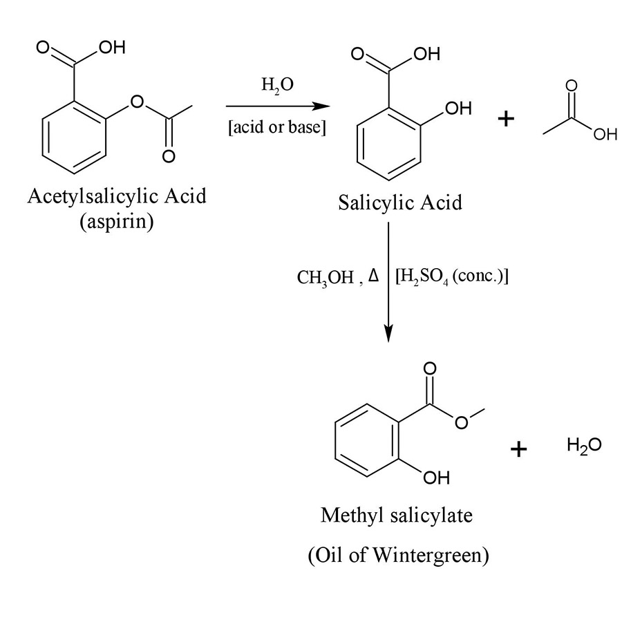
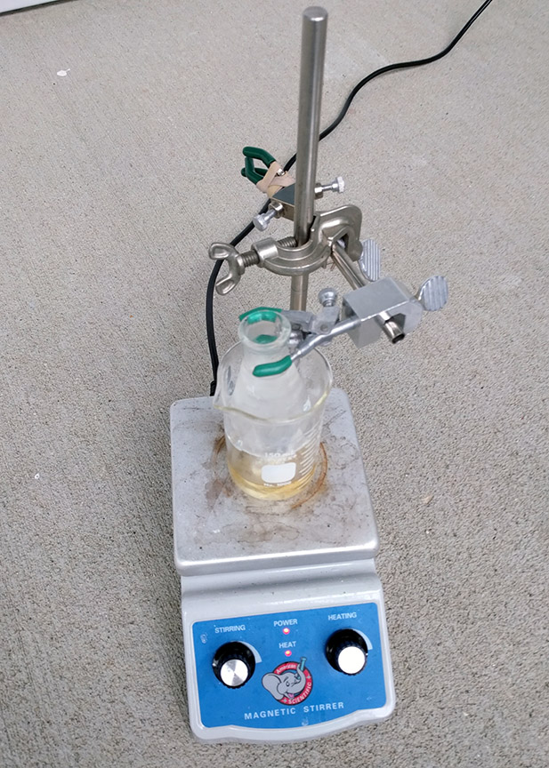

Methyl salicylate is an organic ester responsible for the minty smell of wintergreen. This procedure will use starting materials that can be found at a supermarket including aspirin, antifreeze, and drain cleaner. The synthesis is broken down into two parts: hydrolysis of the aspirin and esterification.
Our starting material is aspirin (acetylsalicylic acid). In the first step, water is used to break the ester bond. This hydrolysis reaction can be accomplished through either acid or base catalysis. This removes the acetate from the aspirin. Quenching with water will leave both acid products in their protonated form. If base-catalyzed hydrolysis is used, both acids will likely be deprotonated, and acid will need to be added to separate the salicylic acid (water insoluble) from the acetic acid (water soluble).
The second step is a standard Fisher esterification. This reaction will connect the salicylic acid to the methanol with concentrated sulfuric acid as the catalyst.
In practice, I decided to perform the reaction in a single flask and use concentrated sulfuric acid to complete both steps at the same time. The sulfuric acid came from hardware-store drain cleaner which contained some impurities and was also not as concentrated as I would have liked.
After refluxing, the resulting solution smelled quite strongly of wintergreen which indicates that the experiment was successful. The final solution had a brown-orange tint which is the result of contamination since methyl salicylate should be a colorless oil. If I acquire additional glassware in the future, I will perform a distillation to purify the results.
{kind=link}
{kind=link}